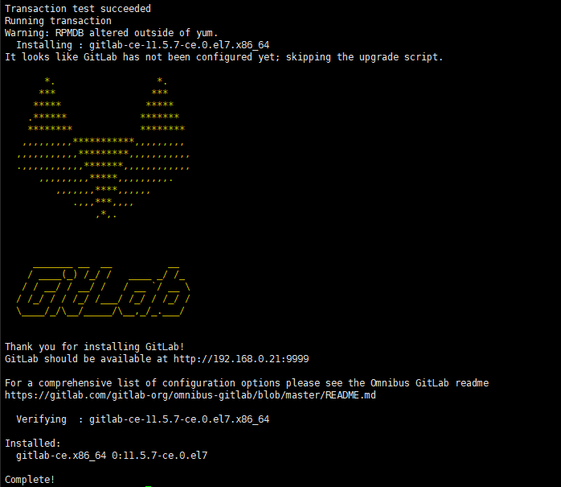

GitLab私有远程仓库搭建
参考：百度
制作日期：2019-01-29 - 2019-02-01
制作人：小桅[yw_forgit@163.com]
1、GitLab安装
|
// 安装GitLab依赖包 [root@localhost
home]# yum install -y curl policycoreutils-python openssh-server
openssh-clients // 查看centos的版本，本教程的是7.5，是centos7 [root@localhost
home]# cat /etc/centos-release CentOS Linux release 7.5.1804 (Core) 下载对应操作系统的gitlab的rpm包，用浏览器打开（本教程用gitlab-ce-11.5.7） centos6系统的下载地址: https://mirrors.tuna.tsinghua.edu.cn/gitlab-ce/yum/el6 centos7系统的下载地址: https://mirrors.tuna.tsinghua.edu.cn/gitlab-ce/yum/el7 // centos7的执行这个（本教程用的centos7） [root@localhost
home]# wget https://mirrors.tuna.tsinghua.edu.cn/gitlab-ce/yum/el7/gitlab-ce-11.5.7-ce.0.el7.x86_64.rpm // centos6的执行这个 [root@localhost
home]# wget https://mirrors.tuna.tsinghua.edu.cn/gitlab-ce/yum/el6/gitlab-ce-11.5.7-ce.0.el6.x86_64.rpm // 这里我先进来home目录，然后执行了wget [root@localhost
home]# ll total 454180 -rw-r--r--. 1 root
root 465080251 Jan 16 10:36 gitlab-ce-11.5.7-ce.0.el7.x86_64.rpm drwx------. 3
houtai houtai 78 Jan 28 22:37 houtai drwxr-xr-x. 6 root
root 86 Jan 25 01:37 svnProject // 如果没有wget命令，则安装一下，然后再下载rpm [root@localhost
home]# yum install wget
// 通过yum安装本地GitLab的rpm包 [root@localhost home]# yum -y localinstall gitlab-ce-11.5.7-ce.0.el7.x86_64.rpm |
安装完成有个大大的logo

2、修改GitLab配置文件
|
// 修改GitLab的主配置文件 [root@localhost
home]# vi /etc/gitlab/gitlab.rb |
这里配置external_url为http://192.168.0.21:9999 (指定gitlab运行端口，后续访问gitlab、代码提交都是这个url)，如果用域名则直接用域名，但保证域名是可用的。

3、初始化GitLab
初始化
|
// 初始化GitLab，要等待挺久的，不断的输出 [root@localhost
home]# gitlab-ctl reconfigure |
最后一定要看到这句Chef Client finished，如果是Chef Client failed就要检查哪里报错了，一般错误信息会有红色字体提示。
比如我在另外的机子就有报错，这里看不到报错信息，去看日志文件会有提示的
页面访问初始化root用户密码
访问http://192.168.0.21:9999 ，就是那个external_url，能访问则表示成功，然后修改默认root用户(管理员)的密码，不需要旧的密码（也没有），直接修改即可。
如果不能访问，可能是端口没有开放（gitlab在我的CentOS上，浏览器访问在win10上，故要开放端口）
确定是否是端口问题，可以在gitlab所在的主机，使用命令：
// 如果能返回设置初始化密码的HTML页面信息，则表示是端口问题。
[root@localhost
~]# curl http://192.168.0.21:9999
CentOS7（注意CentOS7默认使用firewall作为防火墙，6的可能不适用）对外开放端口：
// --permanent永久生效，没有此参数重启后失效
[root@localhost
~]# firewall-cmd --zone=public --add-port=9999/tcp --permanent
// 重新载入配置
[root@localhost ~]#
firewall-cmd --reload
修改成功就会自动跳转到
登录成功页面
温馨提示：
如果安装错误了，需要重新安装，则
# rpm -e gitlab-ce 卸载
# cd / 去到根目录
# find -name gitlab* 把gitlab所有的都找出来，然后
# rm -rf …. 全部删除，就可以重新安装了，不然删除干净就重新安装可能会有问题。
管理GitLab服务的常用命令：
|
// 如果修改了external_url，重启一下就好了 [root@localhost
home]# gitlab-ctl restart // 如果不行，可能要用 [root@localhost
home]# gitlab-ctl reconfigure 启动GitLab服务： [root@localhost
home]# gitlab-ctl start 查看GitLab的状态： [root@localhost
home]# gitlab-ctl status 停止GitLab服务： [root@localhost
home]# gitlab-ctl stop |
穿插清理缓存的知识点：
|
// 查看运行内存 [root@localhost home]# free -m // free就是剩余多少；cached就是缓存，centos会缓存大文件什么的
total used free shared
buffers cached Mem: 3961 3749 212 0 225 560 -/+ buffers/cache: 2963 998 Swap: 0 0 0 // 想清除缓存的操作 [root@localhost home]# sync [root@localhost home]# echo 3 > /proc/sys/vm/drop_caches // 然后再看一下，就cached就很少了，可用运行内存就多了 [root@localhost home]# free -m
total used free shared
buffers cached Mem: 3961 2919 1042 0 2 18 -/+ buffers/cache: 2898 1062 Swap: 0 0 0 [root@localhost home]# |
GitLab感觉挺耗内存的
|
// 安装、运行GitLab之前的内存 [root@localhost
home]# free -m total used free shared
buff/cache available Mem: 15828 255 13120 8 2452 15088 Swap: 12031 0 12031 // 安装、运行GitLab之后的内存 [root@localhost
home]# free -m total used free shared
buff/cache available Mem: 15828 5946 7082 130 2798 9267 Swap: 12031 0 12031 [root@localhost
home]# |
4、GitLab的使用
管理区域
新建项目、新建用户、新建组 都在这个页面
新建项目
看下这个链接，myfirst就是项目路径或者说是项目仓库名称
http://192.168.0.21:9999/root/myfirst.git
新建用户
新用户的密码设置有两种，下图是一种
创建完成，点击 Edit
第二种方法设置密码，上面点击完Edit之后，会有下图

回到管理区域
项目添加用户
点击
点击设置，然后成员
就可以邀请用户了，还可以邀请组，组我们还没有创建（需要注意的是Developer权限不能pushmaster主分支，需要更高的权限）
然后就能看到有新的成员的了，这样该项目TestUser用户就能管理了
登录TestUser测试用户（换一个浏览器登录，root用户就不用退出了，后面root用户还会用到），会强制要求修改密码
测试用户就有了新添加的项目

创建组
回到root用户，看图

创建组完成之后，该界面就能添加用户进 组 了
添加好了
给组新建项目
给组添加项目，这样整一个组的成员都可以管理该项目
给组添加项目，可以从下图小图标进去
也可以，点击 组名称，然后选择 设置 进去添加项目
创建完成
看下仓库路径
http://192.168.0.21:9999/android/androidfirst.git
登录TestUser用户，可以看到，又多了一个项目
这样子项目、用户、组，就都说了，对于团队的项目，推荐采用分组，然后组添加人员，然后在组里面创建项目（注意，组里面不能添加用户下的已有项目，只能新建项目，或者导入，起码我没有找到能添加的方法）。
5、Eclipse提交代码到本地仓库、私有远程GitLab仓库
先在GitLab上创建项目http://192.168.0.21:9999/backend/hsp.git ，我这里是分组，组里面创建项目。都没有关系。
创建本地仓库
右键需要提交的项目
选Git

配置本地Git仓库
git提交代码一般都是先提交到git本地的仓库，然后再提交到远程的仓库（即类似于GitLab、GitHub这样的），这里应该就是创建本地的仓库，这是我用大腿猜的
预Commit
完成之后，什么弹框都没有，不要慌，看项目，多了NO-HEAD标志
右键项目，最后点击Commit提交，也不要慌，还不会提交的
插播 修改提交者的名称
（eclipse通过Git提交到GitLab，提交代码的作者不是用GitLab的账号记录的）
（插播）去设置发现，上图那个Author是在这里设置的，要修改，不然提交的时候在GitLab那边是以这个名称显示提交者的，注意，修改之后如果不生效，可能要重启eclipse。
提交完成后，GitLab仓库查看到
Commit与Push分开
当然也可以先commit到本地仓库，最后再push到远程仓库（别人的截图）
GitLab仓库配置
预Commit、Commit与Push分开 最后都会来到这里。这里的用户名、密码才是GitLab的密码。
注意，如果提交失败，则会有Rejected….
对应一下项目
注意，提交的项目最好要与GitLab创建的项目的名称一致，因为提交整个项目，其项目名称这个路径不会提交到GitLab上，只会提交该项目目录下的东西到GitLab。
注意点：
可以看到yw-forGit名称就是我eclipse设置的user的name。
（好像master分支要一次性提交完成代码，如果第一次只提交了一个文件，后面想一次性提交整个项目，会被rejected，好像是这样的，然后我删除整个本地git仓库提交记录、GitLab私有仓库的对应项目，重新提交就好了）